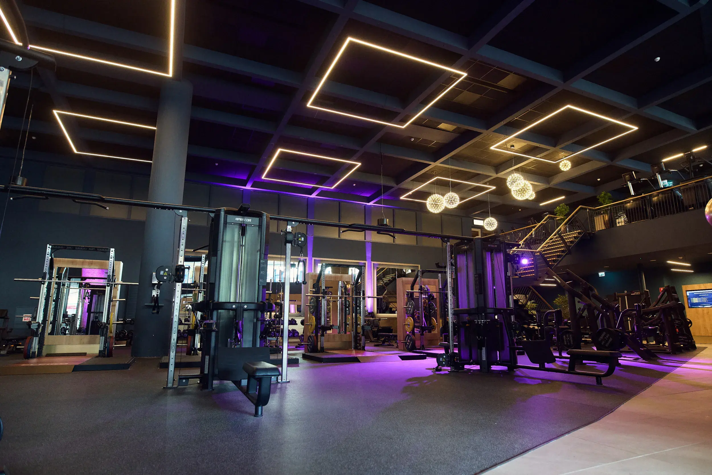

Ik heb deze website gemaakt voor het vak Informatica. Op deze website vertel ik iets over mezelf en leg ik verschillende onderwerpen uit.
Hoi! Ik ben Lucas en ik ben 15 jaar oud. Ik zit momenteel op het Vlietland College in HAVO 4. In mijn vrije tijd ga ik naar de sportschool. Dat doe ik vier keer per week. Daarnaast ga ik regelmatig voetballen met vrienden.

In de toekomst wil ik graag een leuke opleiding volgen en later een leuke baan vinden. Ik weet nog niet precies wat ik wil worden. Ik hoop dat ik door de lessen Loopbaanoriëntatie en -begeleiding (LOB) ontdek welke opleiding en welk beroep bij mij passen.
Op de andere pagina's leg ik uit wat het binaire stelsel is en hoe computers kleuren weergeven.